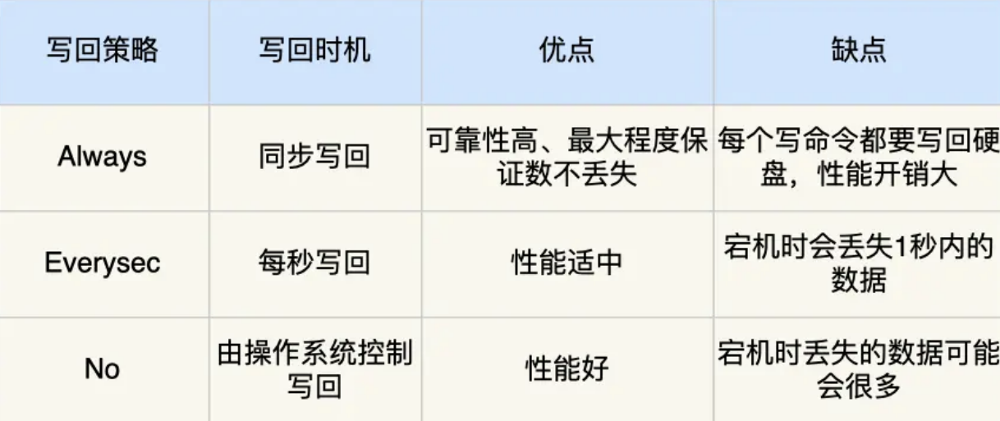
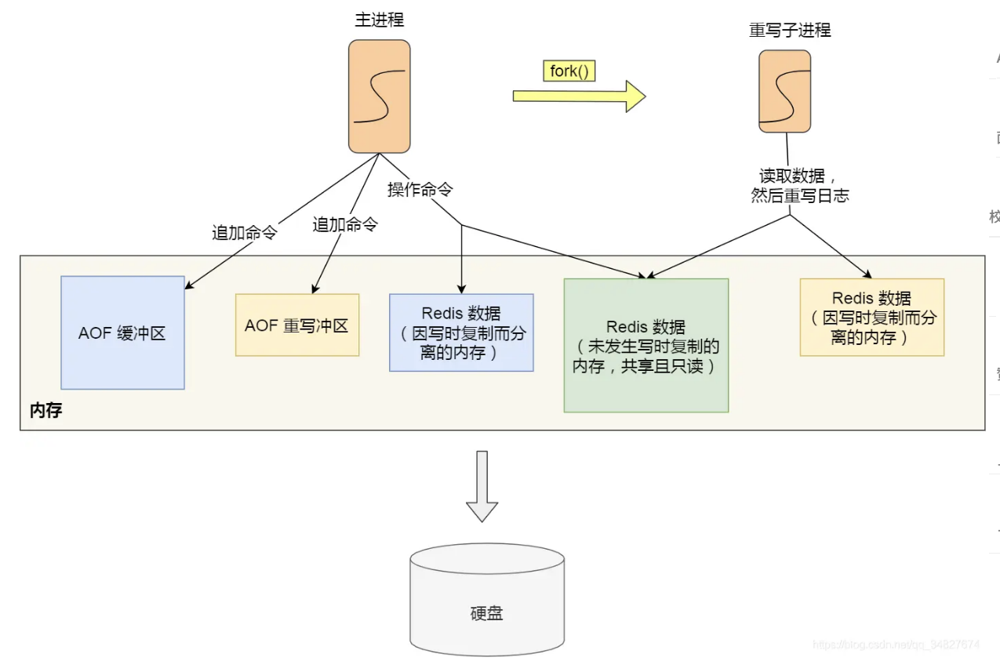
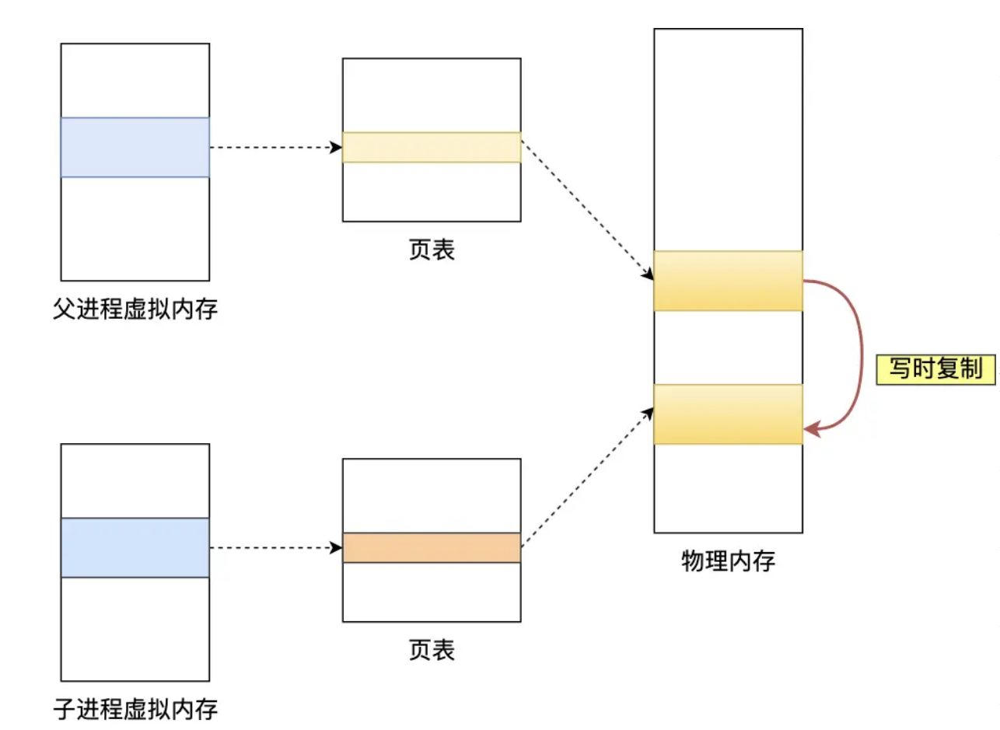

Redis-持久化
redis如何保证数据不丢失
redis的读写操作都是在内存中的，所以redis性能才会很高，当redis重启时内存中的数据就会丢失，为了保证内存中的数据不会丢失，redis实现了持久化的机制，这个机制会把数据存储到磁盘，这样redis重启就能从磁盘中读取到原有的数据
redis共有三种持久化方式：
- AOF日志：每执行一条写操作，就把该命令追加到一个文件中
- RDB快照：将某时刻的内存数据以二进制方式写入磁盘
- 混合持久化：结合AOF和RDB的优点
AOF和RDB对比
AOF：
- 优点：更好的数据安全性，默认每次接收到一个写命令就追加到文件末尾；支持多种同步策略；还可以通过重写优化减少文件体积
- 缺点：记录每个写操作，因此文件通常比RDB大，消耗更多磁盘空间；频繁的磁盘IO（always）可能对redis写入性能造成一定影响；如果没有开启重写，恢复过程可能较慢
RDB：
- 优点：以快照形式保存某时刻的数据，文件体积小，备份和恢复速度快；RDB是子进程进行创建的，不会阻塞服务器处理命令请求
- 缺点：RDB在两次快照之间，如果服务器发生故障，那么这段事件的数据将完全丢失；如果创建快照到恢复期间有写操作，恢复后的数据可能与故障前数据不一致
AOF日志
如何实现
redis每当执行一条写操作命令后，就会把该命令以追加写的方式写入到一个文件中，redis重启的时候可以读取该文件记录的命令，逐一执行来恢复数据
要写执行命令再写入日志
- 避免额外的开销：如果先写日志再执行命令的话，可能当前命令语法有问题，那么就会把错误的命令记录到AOF日志里了
- 防止写命令被阻塞
也有两个缺点：
- 数据可能丢失，这是两个操作，redis还没将命令写入磁盘时 服务器发生宕机，这个数据就会有丢失的风险
- 可能阻塞其他操作，记录AOF日志也是redis主线程执行的
redis写AOF日志的详细过程：
- 用户态：执行写操作-> 命令追加到aof缓冲区
- IO系统调用write
- 内核态： 写入内核缓冲区-> 内核发起写操作 -> 写入磁盘
redis写回硬盘的策略：
- always：总是，每次写操作执行完后，同步把AOF日志写回到磁盘
- everysec：每秒，每次执行完写操作，先把命令写入aof内核缓冲区，每隔一秒把缓冲区内容写入
- no：不由redis控制写回磁盘的时机，转交给操作系统控制写回的时机

AOF重写机制
介绍
AOF是个文件，随着写操作越来越多，文件越来越大；为了避免因为文件过大导致恢复数据慢的情况，redis提供了AOF重写机制（当AOF文件大小超过所设阈值，就会启用来压缩AOF文件）
重写：读取当前数据库所有的键值对，将每个键值对用一条命令记录到新的AOF文件，等到全部记录完后，使用新的AOF文件替换现有的AOF文件
流程
AOF重写是后台子进程完成的，好处
- AOF重写期间，主进程还可以继续处理命令请求，避免阻塞主进程
- 子进程带有主进程的数据副本，共享的内存是只读的，有一方修改该共享内存就会发生写时复制，通过不加锁保证数据安全
为了避免数据不一致，redis设置了一个AOF重写缓冲区（重写过程中主进程处理写操作）
重写期间，redis执行完一个写命令后，同时把这个写命令写入缓冲区和重写缓冲区；当子进程重写完后，会向主进程发送一条信号，主进程收到信号后，调用信号处理函数，主要做：把AOF重写缓冲区的内容追加到新AOF文件中，新的AOF文件代替旧AOF文件

RDB快照
如何实现
RDB快照就是记录某一瞬间的内存数据，记录的是实际数据
RDB的快照是全量快照，也就是每次执行快照都会把内存中所有数据记录到磁盘中
提供save和bgsave两个命令，区别在于是否在主线程中执行
- save会在主线程生成RDB文件，如果写入文件事件太长，会阻塞主线程
- bgsave，创建一个子进程生成RDB文件
RDB写时复制
bgsave过程中，redis依旧可以执行命令，关键就是写时复制技术
执行bgsave，会fork创建子进程，此时子进程和父进程共享同一片内存数据，如果此时主进程执行写操作，那么会复制一份副本，子进程把副本写入RDB，主进程可以直接修改

混合持久化
AOF是数据安全性高，但是数据恢复不快
RDB是数据恢复快，但是快照频率不好把握
因此结合两者的优点，提出了混合持久化方式，工作在AOF重写阶段
开启混合持久化，当AOF日志重写时，fork出来的子进程会写把与主进程共享的内存数据以RDB快照的形式写入到AOF文件，这个节点主进程处理的命令会被放到AOF重写缓冲区，重写缓冲区中的内容以AOF方式写入到AOF文件，写入完成后把新的含有RDB和AOF文件替换原有的AOF文件
混合持久化后的文件，前半部分是RDB格式，后半部分是AOF格式
优点：结合了AOF和RDB的优点，开头是RDB快照，恢复的快，同时结合AOF
缺点：
- AOF文件可读性变差
- 兼容性差，开启之后不能在redis4.0之前用